Nushi Vision
A robot cat's eye camera, restyled through the look of other game worlds, live on the floor of the Game Developers Conference. And VideoChopper, the small Python tool that made the video ready for the models.
What it wasThe brief
Xsolla debuted Nushi, a robotic AI cat, at the Game Developers Conference in 2023. I made the AI image transformations that turned the cat's eye camera, “Nushi Vision”, into the styles of different game worlds for the on-site displays and the livestream, so developers walking by saw a familiar character crossing into their kind of world.
The aim was to keep the character and the place recognisable while the style changed: an artistic bridge between game worlds, not a filter over them.
Campaign reach, as reported by the creative producer: 55M+ views and 465K+ followers in 10 days.
From camera to screenThe booth, and the handoffs I owned
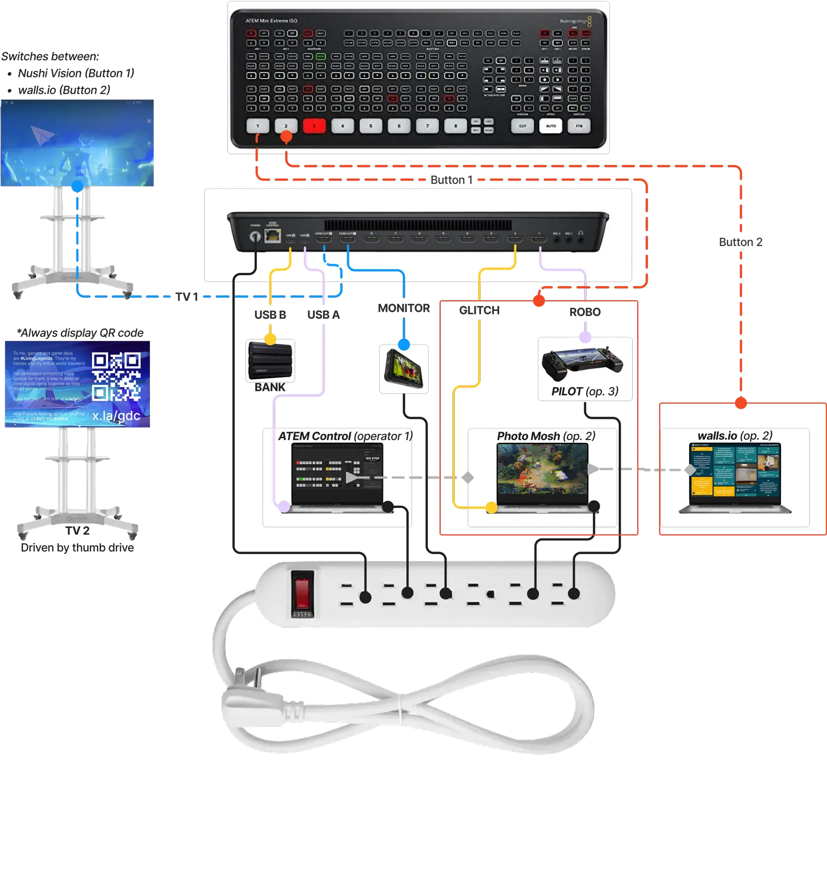
- Capture. The pilot (operator 3) drives Nushi; its eye camera is one input to an ATEM Mini Extreme ISO switcher, which also records to an external drive.
- Transform. On the Photo Mosh station (operator 2), the camera feed is restyled; offline, the same footage goes through VideoChopper, ControlNet and Runway GEN-1 for the blended pieces.
- Switch. At ATEM control (operator 1), button 1 puts Nushi Vision on TV 1 and button 2 the walls.io social wall; TV 2 always shows the QR code to x.la/gdc.
- Deliver. The same program feed goes to the livestream and the on-site screens.
As deputized producer I coordinated the people at each handoff (photographers, roboticists, performers, and the media moving from capture through AI processing to delivery), so that a clip shot on the floor could come back to the floor restyled.
VideoChopperThe tool
Runway GEN-1 took video in short pieces. Style tests were slow and inconsistent when long clips had to be cut by hand, and the existing splitter (Christopher Whelan's ThreasyCut) cut by seconds and couldn't follow different frame rates. Two problems: cutting long video into model-sized sections reliably, and keeping a character's edges and identity when the style changes.
- Read the clip's own frame rate, so every section is exactly 95 frames (about 3.2 seconds at 30 fps) whatever the source.
- Write each section as its own video, named after the source, and save its first frame as a key.
- Style each key with ControlNet, which holds the edges so the character survives; a Midjourney-style ControlNet let people reuse prompts they already knew.
- Send each section to GEN-1 with its styled key, then recombine.
One clip, end to endRobot vision → sections → keys → style
VideoChopper cut it into nine sections of 95 frames (about four seconds each at this clip's frame rate). Each section (top) and its key frame (below):
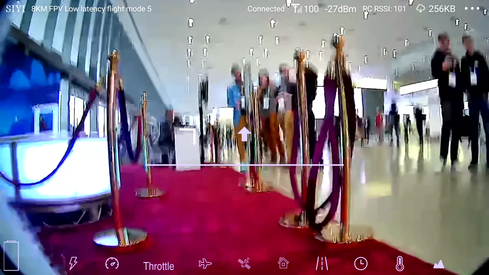
section 00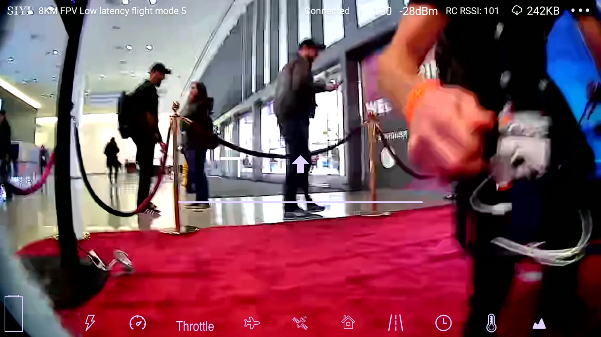
section 01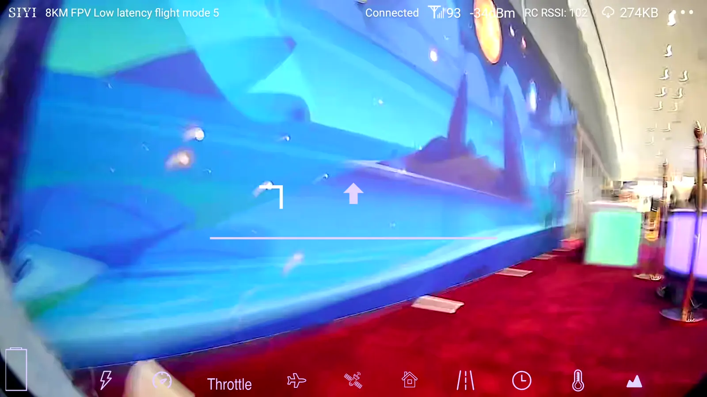
section 02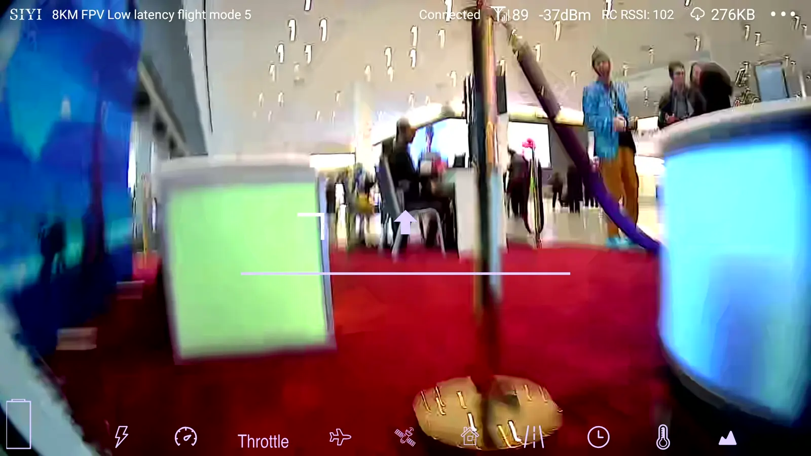
section 03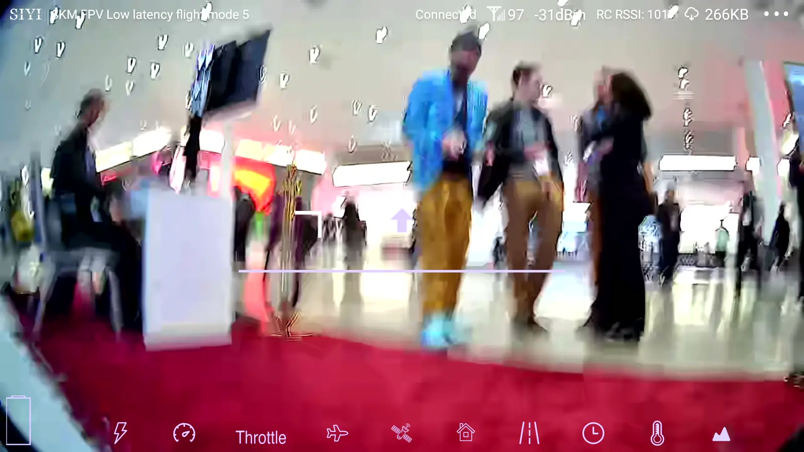
section 04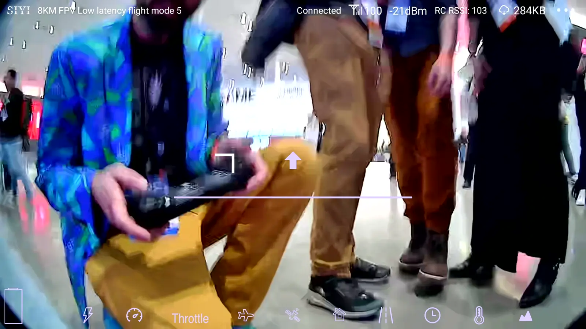
section 05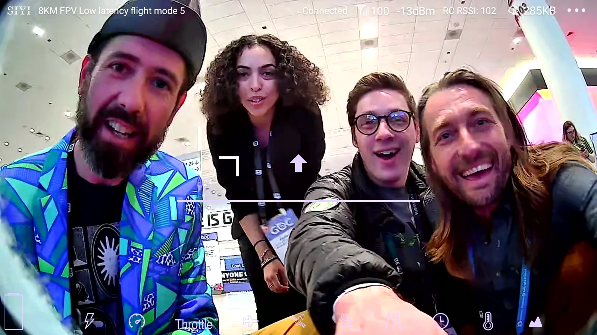
section 06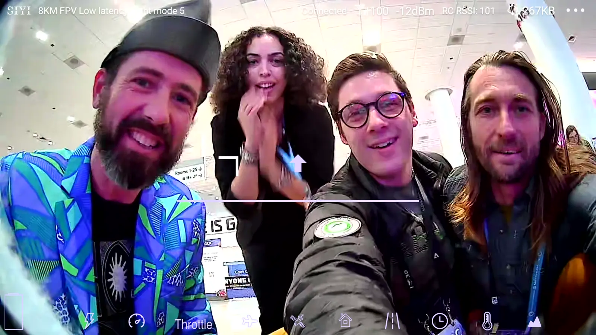
section 07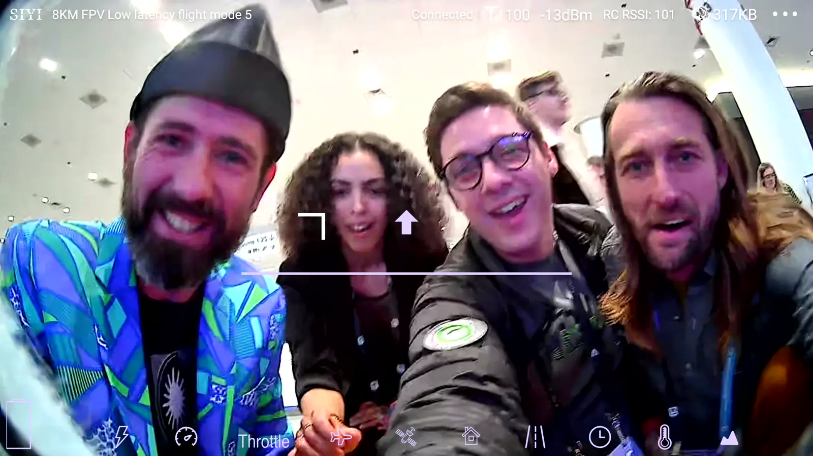
section 08
Each key is restyled with ControlNet. This one used a prompt written as a game's catalogue entry:
“Space Invaders (1978) - System: Arcade - Technical Achievement: Pioneered the use of microprocessors in arcade games, and popularized the shooter genre.”
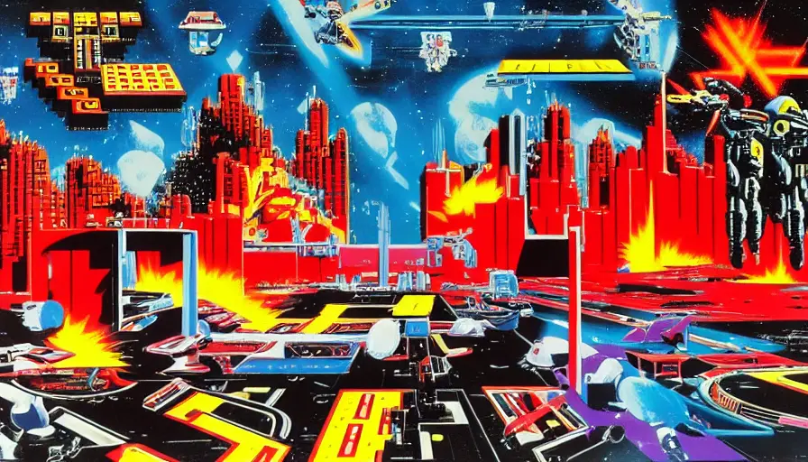
What didn't work yetContinuing problems
VideoChopper cuts precisely, but the recombined sections don't always line up: a style can jump at a seam because each ControlNet generation shifts its seed. The next step is overlapping the sections, so each has a buffer to blend across, and holding seeds steady across a clip.
ControlNet first ran on Hugging Face, but it was slow and the output weaker; moving to an Automatic1111 web interface allowed many more tests in quick succession.
After GDCReuse
Other Georgia Tech students working on AI video adopted the pipeline for long style transfers, and their use shaped later revisions of the notebook.
ToolsEverything AI, and what for
- Python and MoviePy for VideoChopper.
- ControlNet (a Midjourney v4-style Colab) for key styles.
- Runway GEN-1 (via its Discord server) for styling each section.
- Phind and ChatGPT as coding partners; Notion AI for organising and rewriting.
Inspiration: “Do The Evolution”, a GEN-1 short by Ricardo Villavicencio (Runway Studios), and ThreasyCut by Christopher Whelan.
CreditsShared production
- Watson HartsoeAI artist · deputized producer
- Rachel Joy VictorWorldbuilder
- Pierce MyersAssociate creative director
- Gabriel ShalomCreative producer
- Megan May DaalderVideo editor
- XsollaClient · Nushi and Babka
Credits as listed in the shared production record. Each collaborator's own account describes their part.